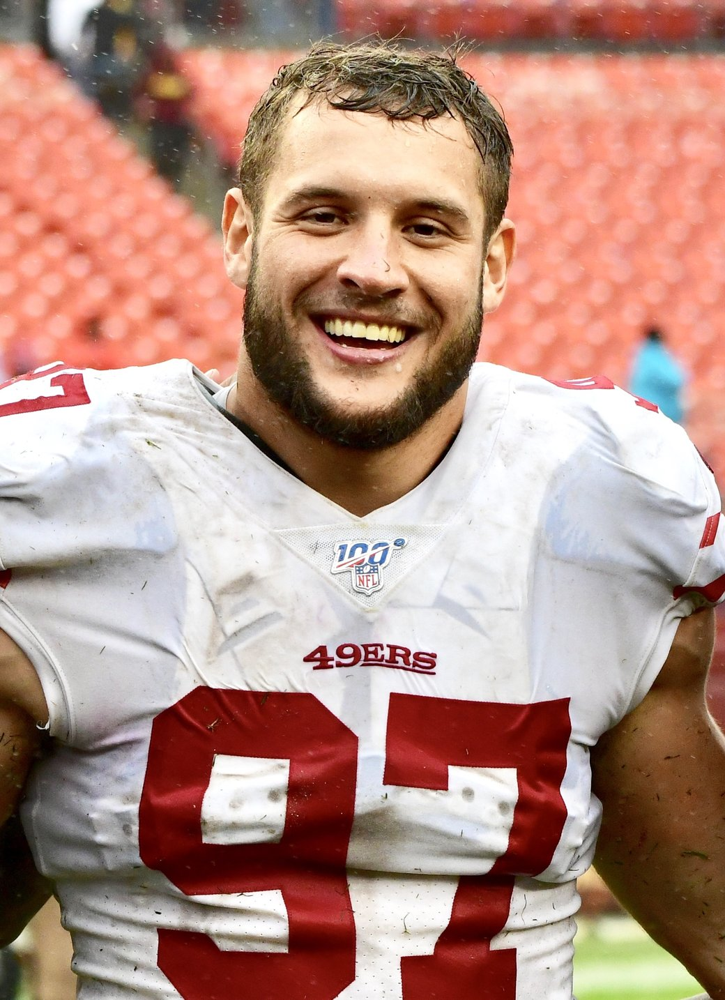

The 49ers Are Signing Matthew Judon, and I Can't Tell if It's Help or a Cry for Help
Nick Bosa's calf, five defensive linemen on IR, a first round pick still on PUP, and now a 34 year old four time Pro Bowler who didn't get a single sack last season. We're 3 and 0, and I'm nervous anyway.

I found out about this about two hours after the Cardinals game, still wearing the jersey, still a little hoarse, eating cold wings over the sink. Somebody in the group chat dropped Matthew Judon's name with nothing else attached. No context. Just "Judon." And my first thought, I swear, was "oh good, a four time Pro Bowler." My second thought, about four seconds later, was "wait, didn't he get cut by Miami?"
Both of those things are true. That's the problem.
Judon says he's signing with us Monday. He worked out at the facility Saturday with three other guys, Julian Okwara, Dawuane Smoot and Jamin Davis, and apparently he's the one they liked. His words, not mine: "With all of the injuries piling up over there, I think I could just come in and help until some of them guys get back." Piling up. Yeah, Matt. You could say that.
How we got here, again
I've already written about Bosa's calf and about the defensive line falling apart like it does every single year, so I'm not doing the full autopsy twice. Short version. Bosa pulled his calf in practice Thursday, sat out Sunday, and he's expected to miss more games. A year ago almost to the week, Week 3, he tore his ACL. I'm not superstitious. I'm just saying I'd like to skip Week 3 from now on.
Behind him it's worse. C.J. West, Sam Okuayinonu, Mikail Kamara, Andrew Farmer and Alfred Collins are all on injured reserve, and Collins tore his patellar tendon, so he's not walking through that door this year. Mykel Williams, the first round pick we drafted to play next to Bosa, is still on PUP working back from the knee. They signed Viliami Fehoko to the 53 and pulled Kevin Givens and Sebastian Valdez up from the practice squad just to have enough bodies for Arizona.
That's the room Raheem Morris is coaching right now. A bunch of guys I had to look up.

The case for Judon, which I actually believe
Let me be the homer for a minute, because I've earned it after today.
This guy was a problem. Four Pro Bowls, two in Baltimore and two in New England. In 2022 he had 15.5 sacks for the Patriots, and between 2021 and 2022 he had 28. He's got 72 career sacks. Seventy two! The man used to wreck Sundays and wave at the crowd while he did it.
And the part that actually makes me feel better is Morris. Judon played for him in Atlanta in 2024, all 17 games, 5.5 sacks and a pick six. Morris knows exactly what he's getting. He's not signing a name off a list, he's calling a guy he's coached, and when a defensive coordinator goes and gets his own guy in the middle of an emergency, I tend to trust that more than I trust some scouting report.
Also, and I mean this, he doesn't have to be 2022 Judon. He has to be a grown man who knows where to line up, who can set an edge on first down and give us 20 snaps without blowing a gap. Brissett threw 52 passes on us today and nickel and dimed his way back from 23 to 6. Anybody who can make a quarterback hurry is an upgrade over what we had out there in the fourth quarter.

And the case against, which I also believe
Now the part that kept me up.
Zero sacks last season. Not two, not one. Zero. He played 13 games for Miami, 19 tackles, and they cut him in December. Buffalo put him on the practice squad and he played one more game. Before that he tore his biceps four games into 2023. He's 34. Edge rushers don't usually get faster at 34, and I've watched enough of this team signing guys off the couch in September to know how it usually ends. Three weeks of "veteran presence" and then a quiet transaction on a Tuesday.
So is he washed? Honestly, maybe. The numbers say he fell off a cliff. My gut says a guy who was that good for that long has something left for 25 snaps a week in a scheme he already knows. I want my gut to be right. I've been wrong about my gut before, most recently about a certain kicker and two extra points.
What really bugs me isn't Judon. It's that we're here again. Every year the line gets hit, every year we're signing a name we remember from five years ago, and every year I'm told the depth is fine. The depth is not fine. The depth is Matt Judon's phone number.
What I actually want from him
Hold the edge. Don't get hurt. Get one sack against Denver so I can stop refreshing his stat page. That's it. That's the whole wish list. If he's got anything left, Morris will find it, and if he doesn't, Bosa's calf heals and we move on and nobody writes about this again.
Fred Warner had 17 tackles today because nobody up front could get off a block. I'd like Fred to have maybe 10 next week. Let somebody else do some of the work.
Denver's at Levi's Sunday. The whole season lives on the schedule hub, who's left standing is on the depth chart, and if you missed today's white knuckle job it's all in 49ers 36, Cardinals 30. Welcome to the Bay, Matt. Please don't make me write the follow up.
More coverage: 49ers · NFL · Bay Area Sports Blog home